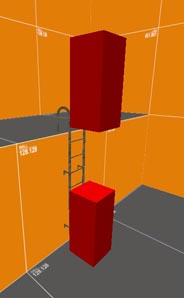
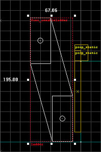
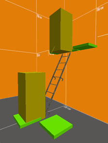
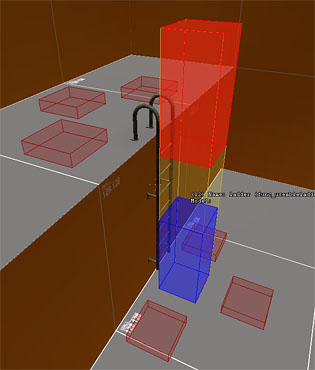
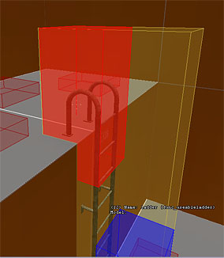

Ladders
Because the environments of Half-Life 2 became more complex than their successors, the demand for a better system of navigating ladders also arose. In previous iterations of the engine, ladders were simply a surface property that could be applied to brush surfaces. This process has become slightly more complicated to provide better control for the level designer and player alike. For Counter-Strike: Source, ladders are still created using a special material or the func_ladder entity, as described in Making levels for Counter-Strike: Source.
func_useableladder
To create a ladder you must define the volume in which the player will move through space while on the ladder. This includes a starting and end position. The volume is described via the func_useableladder entity. The entity has two positions: a starting point and an ending point (See Fig. 1a) . These can be typed into the key-value fields, or more typically the ladder can be defined by using the visual ladder tool, visible when the entity is selected (See Fig. 1b) . Using this tool you can drag the start and end point of the ladder into appropriate positions in the 2D view. The ladder's start and ending point may be of arbitrary orientation and length (See Fig. 1c). Simply pull the endpoints where you want them and the player will move between these points while on the ladder.
|  |
| Fig. 1a - Ladder points |
|
|  |
| Fig. 1b - Changing orientation |
|
|  |
| Fig. 1c - Slanted ladder points |
|
The ladder's volume must be clear of obstructions. If a solid brush surfaces passes through the space you define, the ladder may not be climbable.
|
|
|
Along with the volume of movement, the ladder also needs "dismount" points (See Fig. 1d). These points are defined using the info_ladderdismount entity. These are markers in space that define where a player can exit a ladder from. They are most easily thought of as hints to good positions to place the player in. When a player reaches the top or bottom of a ladder, the code attempts to find the nearest dismount point to where the player is standing and in the direction the player is looking. If there is a dismount point within a certain threshold tolerance, the player will automatically dismount the ladder and move onto that dismount point. The entity has a keyvalue field called LadderName which holds the name of the ladder it is used by. Like the ladder volume, the dismount points must be free of obstruction and allow the player to stand at their position without intersecting solid world geometry.
Generally these are best placed around the base of the ladder from center, left and right.
|
Testing
Once the func_useableladder entity and its info_ladderdismount points have been placed, you can compile your map and test them. Using the sv_showladders console command, you can cause the engine to draw debugging information about the ladder system (Note: You'll have to restart a map if one is already running when you enable this console command). This information will show you the start and end points of the ladder, as well as the dismount points (See Fig. 2a).
If any of these entities is not setup properly (commonly due to interpentration with solid world geometry or the prop model of the ladder itself), it will display this. (See Fig. 2b).
|  |
| Fig. 2a - In-game visualization |
|
|  |
| Fig. 2b - End point stuck in floor |
|
© 2004 Valve Corporation. All rights reserved. Valve, the Valve logo, Half-Life, the Half-Life logo, the Lambda logo, Steam, the Steam logo, Team Fortress, the Team Fortress logo, Opposing Force, Day of Defeat, the Day of Defeat logo, Counter-Strike, the Counter-Strike logo, Source, the Source logo, Hammer and Counter-Strike: Condition Zero are trademarks and/or registered trademarks of Valve Corporation. Microsoft and Visual Studio are trademarks and/or registered trademarks of Microsoft Corporation. All other trademarks are property of their respective owners.